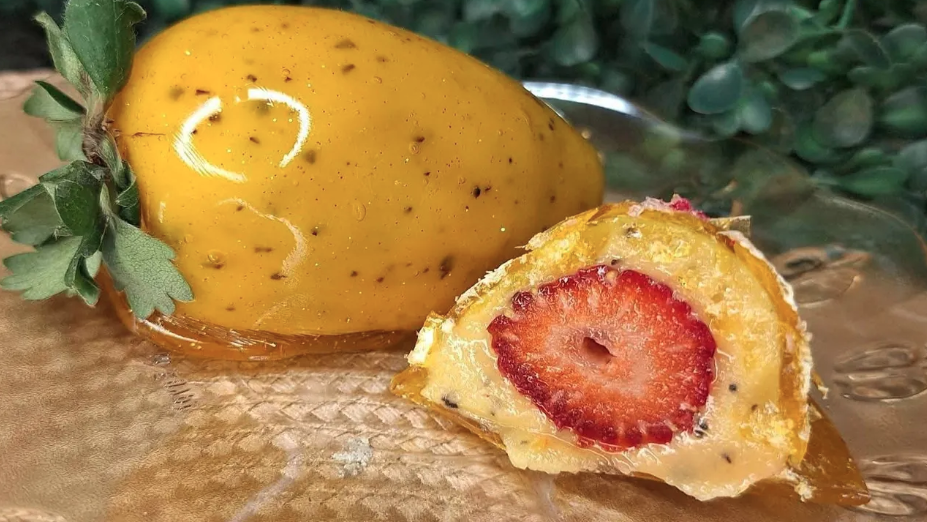
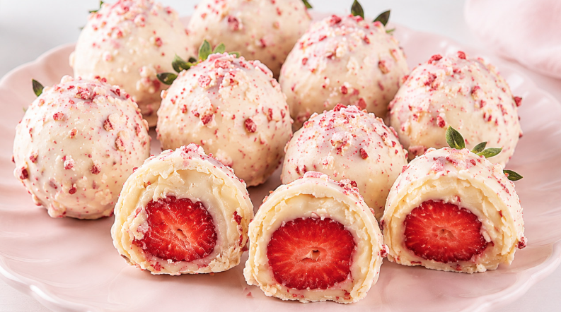

Morango do Amor
Doce brasileiro feito com morango inteiro coberto por brigadeiro branco e finalizado com uma casquinha crocante de calda de açúcar vermelha.
R$ 10,00
A melhor padaria de Londrina
Os queridinhos da casa, fresquinhos todos os dias.
Doce brasileiro feito com morango inteiro coberto por brigadeiro branco e finalizado com uma casquinha crocante de calda de açúcar vermelha.
R$ 10,00

uma variação popular do tradicional morango do amor. Ele combina a fruta fresca com um recheio cremoso azedinho e uma casquinha de caramelo crocante
R$ 12,00

é uma sobremesa e tendência de confeitaria que consiste em um morango fresco envolto em uma camada de brigadeiro branco (ou leite em pó) e banhado em chocolate branco misturado com pedaços crocantes de caramelo vermelho.
R$ 15,00
Aprenda a fazer nossos clássicos em casa.